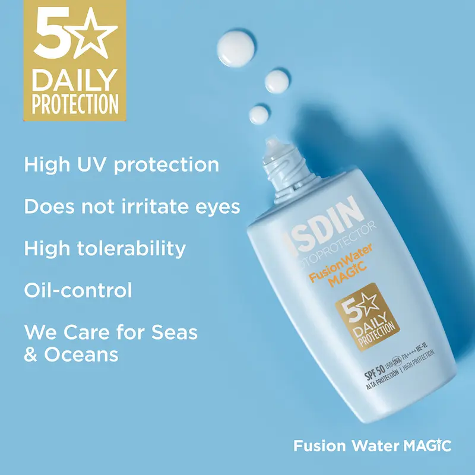
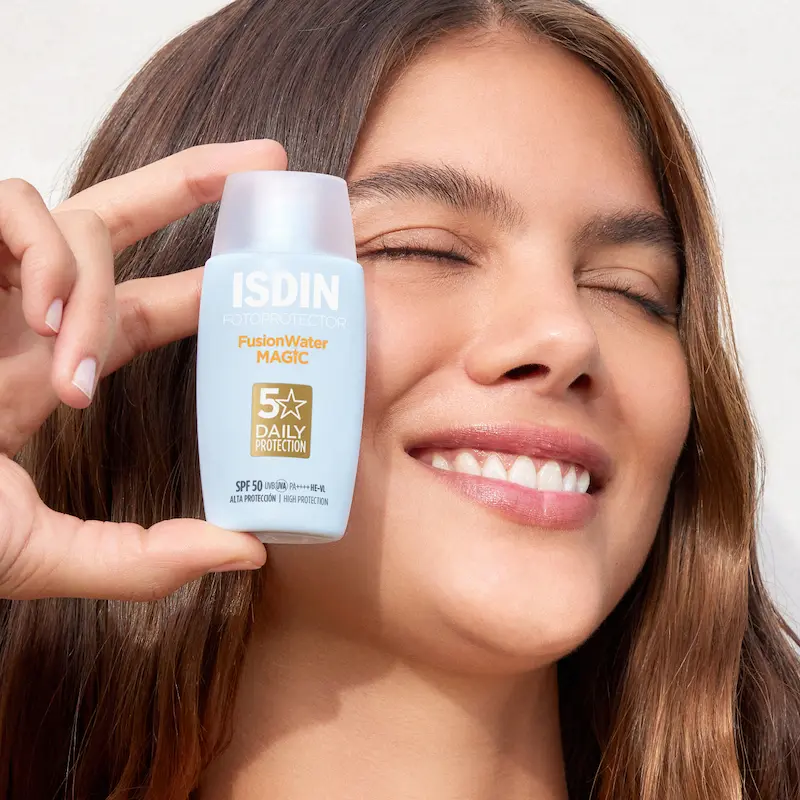

Isdin Fusion Water Magic: Magia protecției ultra-lejere SPF 50
Recenzie independentă. Produsul nu este sponsorizat.
Analizăm de ce acest fluid pe bază de apă a devenit un produs cult: cum tehnologia Safe-Eye protejează ochii împotriva usturimii, cum controlează excesul de sebum și de ce este alegerea ideală pentru soarele activ din România și Moldova.

Isdin Fotoprotector Fusion Water Magic
Un fotoprotector ultra-lejer pe bază de apă, ideal pentru utilizarea zilnică, ce oferă o protecție ridicată împotriva radiațiilor UV fără a lăsa reziduuri grase. Analizăm tehnologia inovatoare Safe-Eye Tech, care permite aplicarea produsului pe întreaga față fără a irita ochii, și formula Wet Skin, eficientă chiar și pe pielea umedă. Îmbogățit cu acid hialuronic și vitamina E, acest fluid hidratează intens și oferă o acțiune antioxidantă puternică, lăsând pielea catifelată și mată. Este baza perfectă pentru machiaj, îmbinând protecția solară avansată cu o textură invizibilă care se absoarbe instantaneu
De ce merită atenția acest produs?
Isdin Fusion Water Magic SPF 50 este un fluid de protecție solară ultraușor pentru utilizare zilnică, care oferă protecție ridicată împotriva razelelor UVA și UVB. Formula pe bază de apă se absoarbe rapid și nu lasă peliculă grasă.
Produsul nu irită ochii, este potrivit pentru pielea sensibilă și poate fi folosit zilnic ca ultim pas în rutina de îngrijire. Textura ușoară îl face ideal și ca bază pentru machiaj.


Textură și prima utilizare
Spre deosebire de produsele solare clasice, Isdin Fusion Water Magic are o textură incredibil de lejeră pe bază de apă. Se contopește instantaneu cu pielea, fără a lăsa o senzație lipicioasă sau „mască albă”, ceea ce îl face practic imperceptibil pe tot parcursul zilei.
Produsul oferă un finisaj mătăsos și un efect de „soft focus”, uniformizând perfect suprafața tenului. Datorită tehnologiei Wet Skin, fluidul poate fi aplicat chiar și pe pielea umedă (după piscină sau mare), menținând gradul complet de protecție fără a se descuama.
Analiza compoziției: Ce conține?
Formula Magic este îmbunătățită cu extract de alge mediteraneene și vitamina E, care acționează ca antioxidanți puternici, protejând celulele împotriva daunelor cauzate de radicalii liberi și poluarea urbană.
Componenta cheie este Acidul Hialuronic, care hidratează intens pielea în condiții de soare activ. Mândria brandului este tehnologia brevetată Safe-Eye Tech™, care permite aplicarea fluidului chiar și în zona ochilor, eliminând complet iritația și lăcrimarea.
Cui NU i se potrivește?
În ciuda versatilității sale, Fusion Water Magic poate să nu fie suficient de confortabil pentru persoanele cu pielea **foarte uscată**, predispusă la descuamare. Textura sa lejeră pe bază de apă vizează un finisaj mat, motiv pentru care tenul uscat ar putea necesita un strat suplimentar de cremă nutritivă ca bază.
De asemenea, trebuie menționat că acest produs nu este rezistent la apă pentru sporturi nautice profesionale de lungă durată. Pentru maratoane sau înot prelungit, este mai bine să luați în considerare liniile sportive specializate de la Isdin, în timp ce Magic este varianta ideală **urbană și de plajă** pentru reîmprospătarea zilnică.
Protecție vs Îngrijire: cum să-l folosești corect?
Este esențial să reții că Isdin Fusion Water Magic nu este doar un ecran solar, ci un produs de îngrijire complet. Datorită conținutului de acid hialuronic, acesta înlocuiește eficient serul de zi în perioada estivală, fără a supraîncărca pielea cu straturi inutile de cosmetice.
Este un **produs inteligent** care se adaptează ritmului tău de viață: tehnologia Sea Friendly face formula biodegradabilă, protejând ecosistemul marin. Prin utilizare regulată, vei observa că pielea rămâne hidratată și luminoasă, iar riscul apariției petelor pigmentare este minimizat, chiar și în condițiile unui indice UV ridicat.
Licehack: Regula celor două degete și zona ochilor
Pentru o protecție SPF 50 completă, folosește întotdeauna „regula celor două degete”: aplică două linii de fluid pe degetul arătător și cel mijlociu — această cantitate este suficientă pentru față și gât. Datorită tehnologiei Safe-Eye, îl poți aplica cu încredere pe pleoape, fără teama de lăcrimare sau iritații.
Fluidul servește ca un primer ideal. Nu se strânge sub fondul de ten și previne oxidarea acestuia la soare. Dacă ești în oraș, Magic poate fi reaplicat peste machiaj prin mișcări ușoare de tapotare sau cu un burețel — nu îți va afecta aspectul estetic.
Cui NU i se potrivește?
Deși formula este adaptată pentru pielea atopică, aceasta poate părea insuficient de densă pentru persoanele cu un tip de ten extrem de uscat. Dacă după aplicare simți o senzație de strângere, încearcă versiunea Isdin FotoUltra Age Repair — aceasta are o textură cremoasă mai bogată.
De asemenea, dacă plănuiești sesiuni de înot profesionale în apă deschisă sau antrenamente intense cu transpirație abundentă, reține că acest fluid necesită reaplicare la fiecare 2 ore. Pentru sporturi extreme, este mai bine să alegi gama specializată Isdin Sport cu rezistență sporită la apă.
Unde poți găsi Isdin Fusion Water Magic SPF 50?
Dacă ești în căutarea unui produs de protecție solară ușor pentru utilizare zilnică, Isdin Fusion Water Magic SPF 50 găsit în farmacii și magazine online din Romania.
Verifică disponibilitatea și prețul*Linkul este oferit în scop informativ. În cazul unui parteneriat, aici va fi plasat link direct către produs.
Întrebări frecvente
Va lăsa fluidul un luciu gras sau urme albe?
Nu, Fusion Water Magic este conceput pe bază de apă (tehnologia Fusion Water). Se absoarbe instantaneu, lăsând un finisaj mat și mătăsos. Spre deosebire de ecranele minerale, această formulă este 100% transparentă și absolut invizibilă, chiar și pe pielea bronzată sau masculină.
Poate fi aplicat în zona din jurul ochilor?
Da, aceasta este una dintre caracteristicile principale ale Isdin. Datorită tehnologiei brevetate Safe-Eye Tech™, produsul este testat oftalmologic și nu provoacă usturime sau lăcrimare. Puteți proteja cu încredere pielea delicată a pleoapelor și conturul ochilor.
Este potrivit pentru tenul gras, predispus la acnee?
Absolut. Formula este oil-free (fără uleiuri) și non-comedogenică, ceea ce înseamnă că nu înfundă porii și nu provoacă noi erupții. Mai mult, textura lejeră ajută la controlul excesului de sebum pe parcursul unei zile toride.
Cum se reîmprospătează corect protecția pe parcursul zilei?
Dermatologii recomandă reîmprospătarea SPF la fiecare 2 ore în caz de expunere directă la soare. Datorită texturii ultra-lejere, Magic poate fi aplicat în straturi succesive — nu se strânge. Dacă purtați machiaj, fluidul poate fi aplicat prin tapotare ușoară cu un burețel peste fondul de ten.